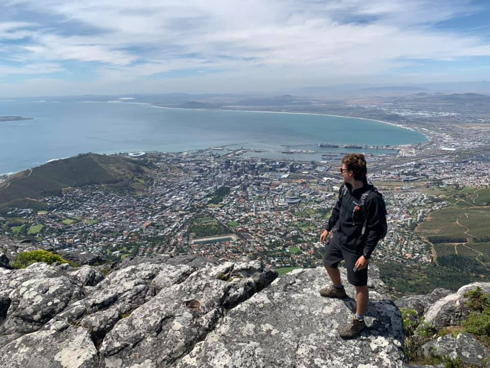

Hello there! I'm a 26-year-old residing in the vibrant city of Herzliya, Israel. My passions are as diverse as the city itself.
Firstly, I have an insatiable love for races and Formula 1. The adrenaline rush of high-speed competitions and the precision of engineering behind each car fascinate me endlessly.
When I'm not immersed in the world of motorsport, you can find me in the virtual realm, diving into the latest computer games. Gaming is not just a pastime for me; it's a way to explore new worlds, challenge my skills, and connect with friends from all over the globe.
Another passion of mine lies in the kitchen. I'm a culinary enthusiast who enjoys experimenting with flavors and creating delicious dishes. Cooking is my creative outlet, allowing me to express myself through food and share memorable experiences with friends and loved ones.
Speaking of loved ones, I must mention my wonderful girlfriend, Liat. She brings joy and companionship to my life, and I cherish every moment spent with her.
Originally hailing from the sunny city of Eilat, I carry with me the warmth and vibrancy of my hometown wherever I go.
In essence, I'm just a guy who's passionate about life, whether it's racing down the track, embarking on virtual adventures, whipping up a culinary masterpiece, or simply enjoying the company of loved ones.
